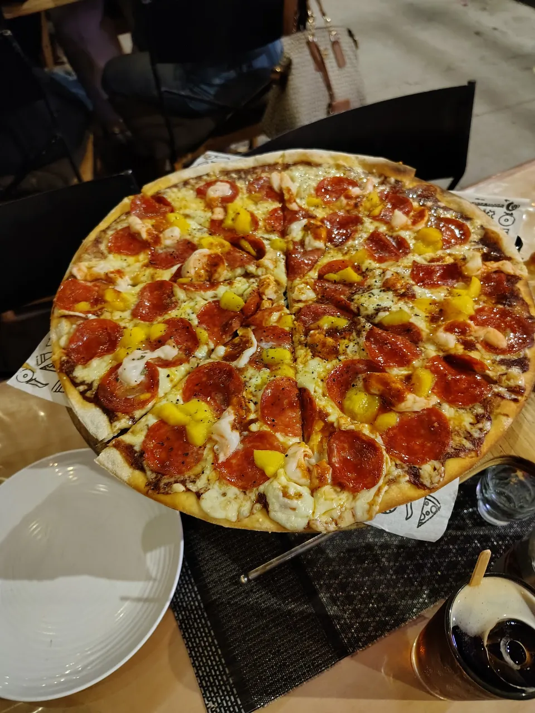
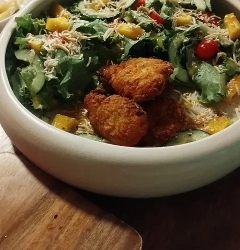
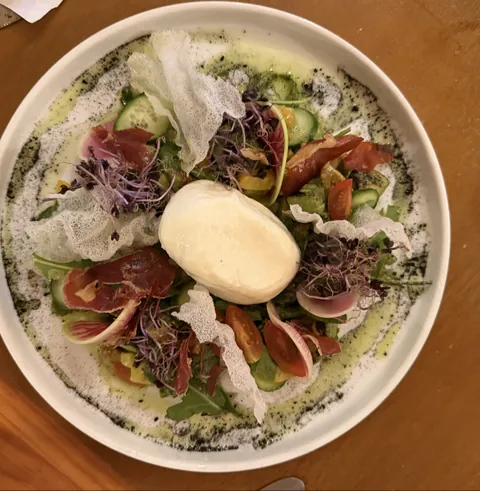
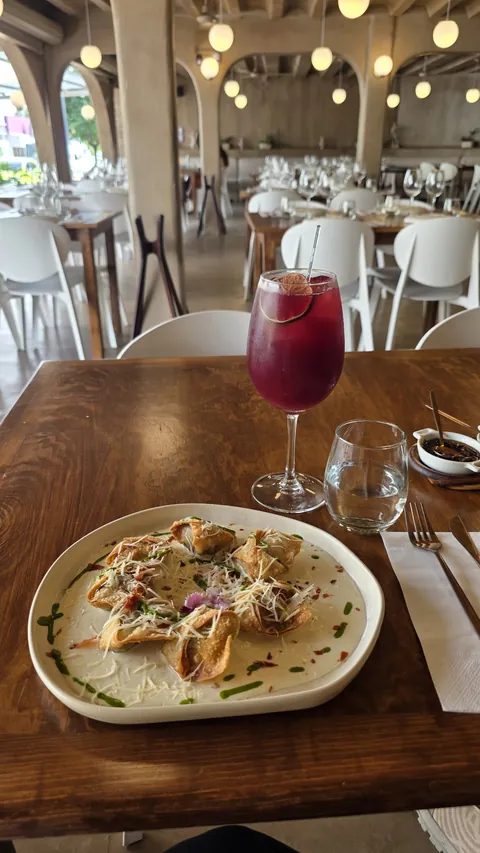
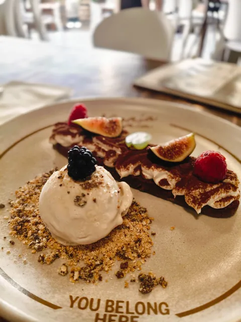
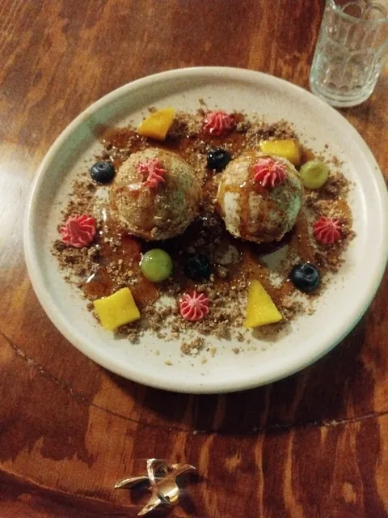
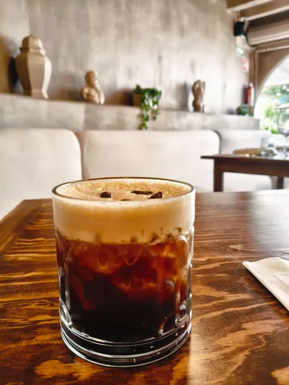
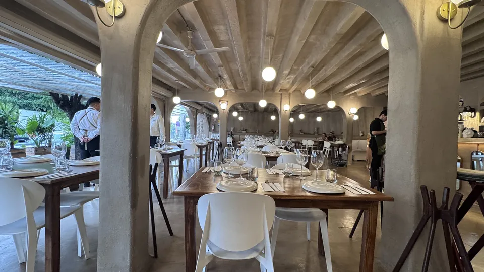
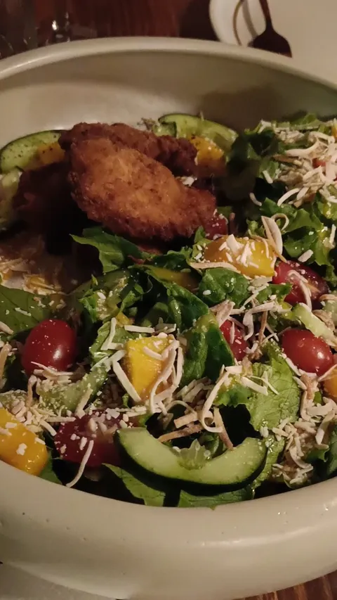
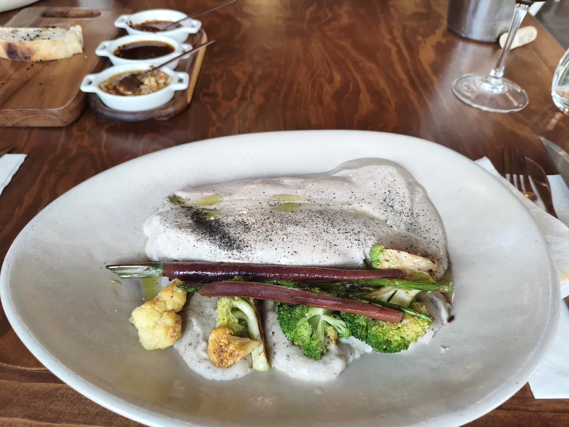

Trattoria, cucina & bar
MaríaMaría
Pizza, pasta y vino en el Centro de Aguascalientes. José F. Elizondo 117.
Cerrados los martes
4.4 en Google, 687 opiniones
La carta
Lo que salede la cocina.
Fotos de mesas de María María. Los precios te los dicen por teléfono.
Pizza de pepperoni
Pregunta el precio

Ensalada César
Pregunta el precio

Burrata con jamón
Pregunta el precio
Pescado con verduras
Pregunta el precio

Pasta y sangría
Pregunta el precio

Postre de higo
Pregunta el precio

Postre con frutos
Pregunta el precio

Café frío con espuma
Pregunta el precio
Lo recomienda Jenrry Villalpando en Google
Filete tartufo
Pregunta el precio

Arcos.Madera.Mesa.
Cómo llegarLa carta de la noche
Tres tiempos,una llamada.
Encierra un plato por tiempo. Llamas y lo pides tal cual.
María María · cucina
IPara abrir
IIAl centro
IIIPara cerrar
Lo que dices al llamar
Hola, ¿tienen mesa? Vamos por la burrata con jamón, el filete tartufo y el postre de higo.
4.4
687 opiniones en Google
Ya lo dijeronen su mesa.
Excelente lugar, la comida muy deliciosa y variada. El ambiente es muy agradable y con una muy buena atención
Araceli LozanoGoogle · Hace un mes Delicioso!!! Lugar muy agradable, cómodo y buen ambiente. La comida deliciosa, y el servicio excepcional. Sin duda recomendaría volver aqui
Diana RamirezGoogle · Hace un mes Delicioso menú, recomendado pedir filete tartufo, delicioso. El servicio es excelente y precios muy accesibles
Jenrry VillalpandoGoogle · Hace 2 meses Comida exquisita, trato muy amable y me pareció excelente que me dieran a catar el vino primero y que lo decantara
Dra. Miriam GarciaGoogle · Hace 2 meses Súper rico, la comida deliciosa. El trato muy atentos y amables lo recomiendo y claro que volveremos
Tania SanchezGoogle · Hace 2 meses I love this place- their food is great but their bathroom is the showstopper. I love the design and vibes and frequent for the delicious Cesar salads when I am in town
Joshua SobelGoogle · Hace 2 meses
Reseñas de Google. La de Joshua se cita en inglés, tal como las escribieron.
Mesas de María María
Mesas que yapasaron por aquí.


Fotos de clientes publicadas en Google.
Ver más fotos en GoogleVisítanos
Estamos enJosé F. Elizondo 117.
20000 Aguascalientes, Ags.
Cerrados los martes
- Lunes
- 2:00 pm a 11:00 pm
- Martes
- Cerrado
- Miércoles
- 2:00 pm a 11:00 pm
- Jueves
- 2:00 pm a 11:00 pm
- Viernes
- 2:00 pm a 12:00 am
- Sábado
- 2:00 pm a 12:00 am
- Domingo
- 2:00 pm a 8:00 pm
Faltan pocas cosas
Todo listopara completar.
Pásanoslo por el mismo chat donde te llegó esta muestra.
- La carta con sus preciosHoy cada platillo dice "Pregunta el precio".
- Fotos propias del salón y de la fachadaLas de ahora las subieron clientes a Google.
- Su logo en grandePara el letrero y las redes.
- Un WhatsApp, si lo tienenCon él, la página también recibe mensajes. Hoy solo llaman.